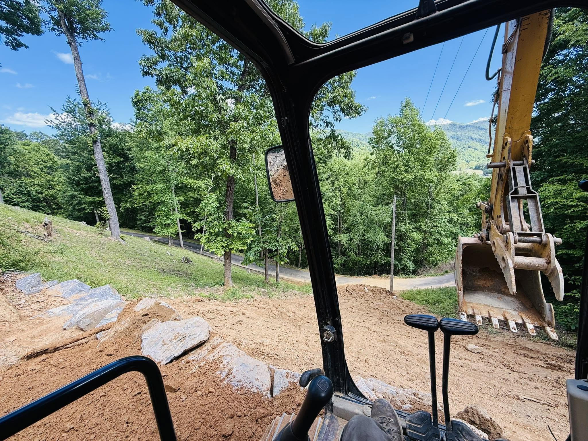

Prime or Subcontractor
Licensed commercial GC that can hold the prime contract on commercial and public projects, or plug in as the reliable site sub for your GC or development team.
A licensed commercial General Contractor and NCDOT pre-qualified site contractor handling excavation, grading, drainage, and full site preparation for commercial and development projects across Western NC, from Asheville to Burnsville and the surrounding counties.
Austin Grading & Land Management is a professional commercial grading and excavation contractor based in Burnsville, NC. We prepare land for commercial buildings, retail, multifamily, light industrial, and public projects, then deliver the pads, parking, drainage, and roadways your project is built on. We can hold the prime contract or run as your dependable site-work subcontractor.
Licensed commercial GC that can hold the prime contract on commercial and public projects, or plug in as the reliable site sub for your GC or development team.
Vetted for North Carolina Department of Transportation work and ready to support NCDOT primes and municipal offices on public infrastructure.
Clearing, excavation, mass grading, building pads, utility and storm drainage, walls, and erosion control, kept in-house so there are fewer subs to chase.
Fully licensed and insured. Bonding capacity and certificate of insurance available on request for qualified commercial bids.
Temporary and permanent measures kept in compliance with environmental requirements, so inspections stay clean and the schedule holds.
You deal with the owner and decision-maker, not layers of management or a call center in another state.

Clearing, grubbing, cut & fill, and undercut to ready raw land for construction.
Pads, parking, and roadways graded and compacted to spec.
Culvert & pipe (HDPE/RCP), catch basins, inlets, swales, and underdrain.
Boulder and segmental-block walls, riprap, and compliant E&S measures.
A dependable grading and site-work sub for commercial and residential builders across WNC who need the dirt work done right and on schedule.
Turn raw, mountain land into build-ready sites, from clearing and mass grading to drainage and access roads.
A site contractor who builds to plan and spec, and who you can confidently spec or refer on your projects.
Retail, light industrial, multifamily, and institutional site work, from new construction to drainage and parking repairs.
Maintenance grading, drainage, culverts, and erosion work for town and county offices.
A pre-qualified, vetted subcontractor for state transportation and public-infrastructure scopes.
We take on commercial and development site work within about two hours of Burnsville, including Asheville, Weaverville, Mars Hill, Marshall, Burnsville, Spruce Pine, Bakersville, Newland, and Banner Elk, across Yancey, Mitchell, Avery, Buncombe, Madison, and Ashe counties.
NAICS: 238910 Site Preparation · 237310 Highway, Street & Bridge Construction · 237990 Other Heavy & Civil Engineering Construction
Send us the plans or the scope. We'll get back fast.